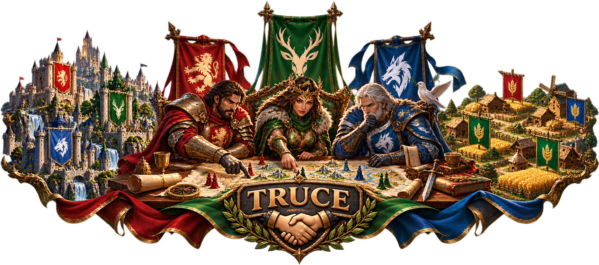

Server 538 Truce
Server 538 has a truce between the largest alliances of the three kingdoms. We respect each other's interests and do not attack members of these alliances. Because this truce cannot be added as an in-game alliance, every player needs to recognize the protected alliance tags.
MWMilky WayBlue Kingdom
COCrimson OakGreen Kingdom
NCNight CityRed Kingdom
Before you attack
Check the player's alliance tag. MW, CO and NC are protected by the Server 538 truce. Their associated farm and sibling alliances are protected as well. When in doubt, ask before attacking.